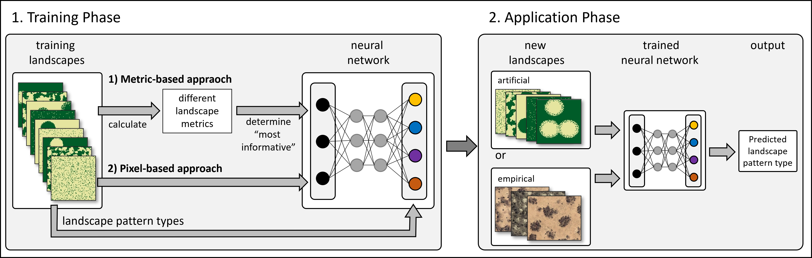

Overview
patternscaper classifies spatial vegetation patterns into ecologically meaningful, user-defined pattern types. It provides a reproducible alternative to visual classification or the manual interpretation of multiple landscape metrics. It can be used to compare landscape structure across space or time, monitor ecosystem change, evaluate spatial simulation outputs, and analyze classified remote-sensing data.
Users define the pattern classes according to their research question and provide representative, labeled training landscapes. These landscapes can be generated with patternscaper or imported from ecological simulation outputs or other categorical raster data. Artificial landscapes are particularly useful when labeled empirical training data are scarce because their classes are known by construction and their variation can be controlled.
The package provides two complementary approaches. The metric-based approach calculates established landscape metrics using the landscapemetrics R package, selects informative metrics, and trains a neural network classifier on them. The pixel-based approach trains a convolutional neural network directly on categorical raster cells without prior feature selection. Both approaches support landscape preparation, model training and evaluation, classification of new landscapes, and visualization of the results.

Overview of the patternscaper workflow. Classifiers are trained using either the metric-based or pixel-based approach and applied to new artificial or empirical landscapes.
Installation
Install the development version of patternscaper from GitHub:
# install.packages("pak")
pak::pak("ecomods/patternscaper")Get started
Follow Get started for an overview of the complete classification workflow and a short runnable example. Depending on your starting point, you can also check out how to:
- Generate artificial landscapes for labeled training or test data
- Import your own landscapes from categorical raster data or matrices
Citation
To cite patternscaper, use:
Tietjen, B., Baldauf, S., & Berger, U. (2026). patternscaper: An R package for classifying spatial landscape patterns using neural networks. Methods in Ecology and Evolution. In review.
Run citation("patternscaper") for the BibTeX entry.
Contributing
See the contributing guide to get involved.
Code of Conduct
Contributions are governed by the project Code of Conduct.